산업안전기사 (2017-05-07 기출문제)
1과목: 안전관리론
1. 산업안전보건법상 안전관리자의 업무에 해당되지 않는 것은?
- 업무수행 내용의 기록·유지
- 산업재해에 관한 통계의 유지·관리·분석을 위한 보좌 및 조언·지도
- 법 또는 법에 따른 명령으로 정한 안전에 관한 사항의 이행에 관한 보좌 및 조언·지도
- 작업장 내에서 사용되는 전체 환기장치 및 국소 배기장치 등에 관한 설비의 점검과 작업방법의 공학적 개선에 관한 보좌 및 조언·지도
(정답률: 77%)

2. 버드(Bird)의 재해분포에 따르면 20건의 경상(물적, 인적상해)사고가 발생했을 때 무상해, 무사고(위험순간) 고장은 몇 건이 발생하겠는가?
- 600건
- 800건
- 1200건
- 1600건
(정답률: 70%)
3. 산업안전보건법상 사업 내 안전·보건교육 중 관리감독자 정기안전·보건교육의 교육내용이 아닌 것은?
- 유해·위험 작업환경 관리에 관한 사항
- 표준안전작업방법 및 지도 요령에 관한 사항
- 작업공정의 유해·위험과 재해 예방대책에 관한 사항
- 기계·기구의 위험성과 작업의 순서 및 동선에 관한 사항
(정답률: 75%)
4. 산업안전보건법상 방독마스크 사용이 가능한 공기 중 최소 산소농도 기준은 몇 % 이상인가?
- 14%
- 16%
- 18%
- 20%
(정답률: 88%)
5. 시몬즈(Simonds)의 재해 손실비용 산정 방식에 있어 비보험 코스트에 포함되지 않는 것은?
- 영구 전노동불능 상해
- 영구 부분노동불능 상해
- 일시 전노동불능 상해
- 일시 부분노동불능 상해
(정답률: 66%)
6. 하인리히 사고예방대책의 기본원리 5단계로 옳은 것은?
- 조직→사실의 발견→분석→시정방법의 선정→시정책의 적용
- 조직→분석→사실의 발견→시정방법의 선정→시정책의 적용
- 사실의 발견→조직→분석→시정방법의 선정→시정책의 적용
- 사실의 발견→분석→조직→시정방법의 선정→시정책의 적용
(정답률: 61%)
7. 교육훈련의 4단계를 올바르게 나열한 것은?
- 도입 → 적용 → 제시 → 확인
- 도입 → 확인 → 제시 → 적용
- 적용 → 제시 → 도입 → 확인
- 도입 → 제시 → 적용 → 확인
(정답률: 86%)
8. 직무적성검사의 특징과 가장 거리가 먼 것은?
- 재현성
- 객관성
- 타당성
- 표준화
(정답률: 68%)
9. 아담스(Edward Adams)의 사고연쇄 반응이론 중 관리자가 의사결정을 잘못하거나 감독자가 관리적 잘못을 하였을 때의 단계에 해당되는 것은?
- 사고
- 작전적 에러
- 관리구조 결함
- 전술적 에러
(정답률: 63%)
10. 재해조사의 목적에 해당되지 않는 것은?
- 재해발생 원인 및 결함 규명
- 재해관련 책임자 문책
- 재해예방 자료수집
- 동종 및 유사재해 재발방지
(정답률: 91%)
11. 주의의 특성에 관한 설명 중 틀린 것은?
- 한 지점에 주의를 집중하면 다른 곳에의 주의는 약해진다.
- 장시간 주의를 집중하려 해도 주기적으로 부주의의 리듬이 존재한다.
- 의식이 과잉상태인 경우 최고의 주의집중이 가능해진다.
- 여러 자극을 지각할 때 소수의 현란한 자극에 선택적 주의를 기울이는 경향이 있다.
(정답률: 91%)
12. 무재해운동의 기본이념 3원칙 중 다음에서 설명하는 것은?
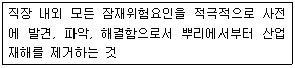
- 무의 원칙
- 선취의 원칙
- 참가의 원칙
- 확인의 원칙
(정답률: 75%)
13. 위험예지훈련 중 작업현장에서 그 때 그 장소의 상황에 즉응하여 실시하는 것은?
- 자문자답 위험예지훈련
- T.B.M 위험예지훈련
- 시나리오 역할연기훈련
- 1인 위험예지훈련
(정답률: 75%)
14. 도수율이 12.5인 사업장에서 근로자 1명에게 평생 동안 약 몇 건의 재해가 발생하겠는가? (단, 평생근로년수는 40년, 평생근로시간은 잔업시간 4000시간을 포함하여 80000시간으로 가정한다.)
- 1건
- 2건
- 4건
- 12건
(정답률: 49%)
15. 토의법의 유형 중 다음에서 설명하는 것은?
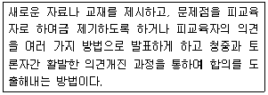
- 포럼
- 심포지엄
- 자유토의
- 패널 디스커션
(정답률: 75%)
16. 레빈(Lewin)은 인간의 행동 특성을 다음과 같이 표현하였다. 변수 “E"가 의미하는 것은?
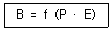
- 연령
- 성격
- 작업환경
- 지능
(정답률: 90%)
17. 산업안전보건법상 안전·보건표지의 종류 중 보안경 착용이 표시된 안전·보건표지는?
- 안내표지
- 금지표지
- 경고표지
- 지시표지
(정답률: 86%)
18. off.J.T 교육의 특징에 해당되는 것은?
- 많은 지식, 경험을 교류할 수 있다.
- 교육 효과가 업무에 신속히 반영된다.
- 현장의 관리 감독자가 강사가 되어 교육을 한다.
- 다수의 대상자를 일괄적으로 교육하기 어려운점이 있다.
(정답률: 73%)
19. 산업안전보건법상 안전보건관리책임자 등에 대한 교육시간 기준으로 틀린 것은?(2018년 03월 30일 개정된 규정 적용됨)
- 보건관리자, 보건관리전문기관의 종사자 보수교육 : 24시간 이상
- 안전관리자, 안전관리전문기관의 종사자 신규교육 : 34시간 이상
- 안전보건관리책임자의 보수교육 : 6시간 이상
- 재해예방 전문지도기관의 종사자 신규교육 : 24시간 이상
(정답률: 80%)
20. 안전점검표(check list)에 포함되어야 할 사항이 아닌 것은?
- 점검대상
- 판정기준
- 점검방법
- 조치결과
(정답률: 66%)
2과목: 인간공학 및 시스템안전공학
21. A 제지회사의 유아용 화장지 생산 공정에서 작업자의 불안전한 행동을 유발하는 상황이 자주 발생하고 있다. 이를 해결하기 위한 개선의 ECRS에 해당하지 않는 것은?
- Combine
- Standard
- Eliminate
- Rearrange
(정답률: 76%)
22. 결함수분석법에서 path set에 관한 설명으로 맞는 것은?
- 시스템의 약점을 표현한 것이다.
- Top사상을 발생시키는 조합이다.
- 시스템이 고장 나지 않도록 하는 사상의 조합이다.
- 시스템고장을 유발시키는 필요불가결한 기본사상들의 집합이다.
(정답률: 77%)
23. 고령자의 정보처리 과업을 설계할 경우 지켜야 할 지침으로 틀린 것은?
- 표시 신호를 더 크게 하거나 밝게 한다.
- 개념, 공간, 운동 양립성을 높은 수준으로 유지한다.
- 정보처리 능력에 한계가 있으므로 시분할 요구량을 늘린다.
- 제어표시장치를 설계할 때 불필요한 세부내용을 줄인다.
(정답률: 73%)
24. 자극과 반응의 실험에서 자극 A가 나타날 경우 1로 반응하고 자극 B가 나타날 경우 2로 반응하는 것으로 하고, 100회 반복하여 표와 같은 결과를 얻었다. 제대로 전달된 정보량을 계산하면 약 얼마인가?
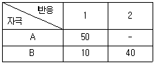
- 0.610
- 0.871
- 1.000
- 1.361
(정답률: 31%)
25. 결함수분석법(FTA)에서의 미니멀 컷셋과 미니멀 패스셋에 관한 설명으로 맞는 것은?
- 미니멀 컷셋은 시스템의 신뢰성을 표시하는 것이다.
- 미니멀 패스셋은 시스템의 위험성을 표시하는 것이다.
- 미니멀 패스셋은 시스템의 고장을 발생시키는 최소의 패스셋이다.
- 미니멀 컷셋은 정상사상(top event)을 일으키기 위한 최소한의 컷셋이다.
(정답률: 74%)
26. 자극-반응 조합의 관계에서 인간의 기대와 모순되지 않는 성질을 무엇이라 하는가?
- 양립성
- 적응성
- 변별성
- 신뢰성
(정답률: 66%)
27. 인간-기계시스템에 관한 내용으로 틀린 것은?
- 인간 성능의 고려는 개발의 첫 단계에서부터 시작되어야 한다.
- 기능 할당 시에 인간 기능에 대한 초기의 주의가 필요하다.
- 평가 초점은 인간 성능의 수용가능한 수준이 되도록 시스템을 개선하는 것이다.
- 인간-컴퓨터 인터페이스 설계는 인간보다 기계의 효율이 우선적으로 고려되어야 한다.
(정답률: 83%)
28. 반사율이 85%, 글자의 밝기가 400cd/m2 인 VDT 화면에 350lx의 조명이 있다면 대비는 약 얼마인가?
- -2.8
- -4.2
- -5.0
- -6.0
(정답률: 54%)
29. 신호검출이론에 대한 설명으로 틀린 것은?
- 신호와 소음을 쉽게 식별할 수 없는 상황에 적용된다.
- 일반적인 상황에서 신호 검출을 간섭하는 소음이 있다.
- 통제된 실험실에서 얻은 결과를 현장에 그대로 적용 가능하다.
- 긍정(hit), 허위(false alarm), 누락(miss), 부정(correct rejection)의 네 가지 결과로 나눌 수 있다.
(정답률: 83%)
30. 근섬유의 직경이 작아서 큰 힘을 발휘하지 못하지만 장시간 지속시키고 피로가 쉽게 발생하지 않는 골격근의 근섬유는 무엇인가?
- Type S 근섬유
- TypeⅡ 근섬유
- Type F 근섬유
- TypeⅢ 근섬유
(정답률: 63%)
31. 의자 설계의 인간공학적 원리로 틀린 것은?
- 쉽게 조절할 수 있도록 한다.
- 추간판의 압력을 줄일 수 있도록 한다.
- 등근육의 정적 부하를 줄일 수 있도록 한다.
- 고정된 자세로 장시간 유지할 수 있도록 한다.
(정답률: 81%)
32. 그림과 같은 시스템의 전체 신뢰도는 약 얼마인가? (단, 네모 안의 수치는 각 구성요소의 신뢰도이다.)
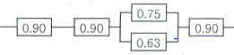
- 0.5275
- 0.6616
- 0.7575
- 0.8516
(정답률: 74%)
33. 시각적 부호의 유형과 내용으로 틀린 것은?
- 임의적 부호 - 주의를 나타내는 삼각형
- 명시적 부호 - 위험표지판의 해골과 뼈
- 묘사적 부호 - 보도 표지판의 걷는 사람
- 추상적 부호 - 별자리를 나타내는 12궁도
(정답률: 60%)
34. 병렬 시스템의 대한 특성이 아닌 것은?
- 요소의 수가 많을수록 고장의 기회는 줄어든다.
- 요소의 중복도가 늘어날수록 시스템의 수명은 길어진다.
- 요소의 어느 하나라도 정상이면 시스템은 정상이다.
- 시스템의 수명은 요소 중에서 수명이 가장 짧은 것으로 정해진다.
(정답률: 77%)
35. 적절한 온도의 작업환경에서 추운 환경으로 변할 때, 우리의 신체가 수행하는 조절작용이 아닌 것은?
- 발한(發汗)이 시작된다.
- 피부의 온도가 내려간다.
- 직장온도가 약간 올라간다.
- 혈액의 많은 양이 몸의 중심부를 순환한다.
(정답률: 76%)
36. 부품에 고장이 있더라도 플레이너 공작기계를 가장 안전하게 운전할 수 있는 방법은?
- fail - soft
- fail - active
- fail - passive
- fail - operational
(정답률: 69%)
37. 산업안전보건법상 유해·위험방지계획서를 제출한 사업주는 건설공사 중 얼마 이내마다 관련법에 따라·유해·위험방지계획서의 내용과 실제공사 내용이 부합하는지의 여부 등을 확인받아야 하는가?
- 1개월
- 3개월
- 6개월
- 12개월
(정답률: 65%)
38. 다음 설명에 해당하는 설비보건방식의 유형은?
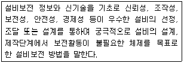
- 개량보전
- 보전예방
- 사후보전
- 일상보전
(정답률: 78%)
39. 다음 설명 중 ( )안에 알맞은 용어가 올바르게 짝지어진 것은?
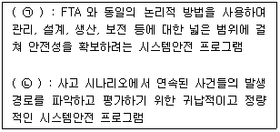
- ㉠ : PHA, ㉡ : ETA
- ㉠ : ETA, ㉡ : MORT
- ㉠ : MORT, ㉡ : ETA
- ㉠ : MORT, ㉡ : PHA
(정답률: 63%)
40. FTA에서 사용하는 다음 사상기호에 대한 설명으로 맞는 것은?
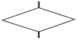
- 시스템 분석에서 좀 더 발전시켜야 하는 사상
- 시스템의 정상적인 가동상태에서 일어날 것이 기대되는 사상
- 불충분한 자료로 결론을 내릴 수 없어 더 이상 전개 할 수 없는 사상
- 주어진 시스템의 기본사상으로 고장원인이 분석되었기 때문에 더 이상 분석할 필요가 없는 사상
(정답률: 74%)
3과목: 기계위험방지기술
41. 반복응력을 받게 되는 기계구조부분의 설계에서 허용응력을 결정하기 위한 기초강도로 가장 적합한 것은?
- 항복점(Yield point)
- 극한 강도(Ultimate strength)
- 크리프 한도(Creep limit)
- 피로 한도(Fatigue limit)
(정답률: 53%)
42. 그림과 같이 목재가공용 둥근톱 기계에서 분할날(t2) 두께가 4.0mm일 때 톱날 두께 및 톱날 진폭과의 관계로 옳은 것은?
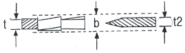
- b > 4.0mm, t ≤ 3.6mm
- b > 4.0mm, t ≤ 4.0mm
- b < 4.0mm, t ≤ 4.4mm
- b > 4.0mm, t ≥ 3.6mm
(정답률: 51%)
43. 컨베이어, 이송용 롤러 등을 사용하는 대에 정전, 전압강하 등에 의한 위협을 방지하기 위하여 설치하는 안전장치는?
- 덮개 또는 울
- 비상정지장치
- 과부하방지장치
- 이탈 및 역주행 방지장치
(정답률: 60%)
44. 드릴링 머신에서 드릴의 지름이 20mm이고 원주속도가 62.8m/min 일 때 드릴의 회전수는 약 몇 rpm인가?
- 500 rpm
- 1000 rpm
- 2000 rpm
- 3000 rpm
(정답률: 68%)
45. 롤러 작업 시 위험점에서 가드(guard) 개구부까지의 최단 거리를 60mm라고 할 때, 최대로 허용할 수 있는 가드 개구부 틈새는 약 몇 mm인가? (단, 위험점이 비전동체이다.)
- 6 mm
- 10 mm
- 15 mm
- 18 mm
(정답률: 52%)
46. 지게차의 안정을 유지하기 위한 안정도 기준으로 틀린 것은?
- 5톤 미만의 부하 상태에서 하역작업시의 전후안정도는 4% 이내이어야 한다.
- 부하 상태에서 하역작업시의 좌우 안정도는 10% 이내이어야 한다.
- 무부하 상태에서 주행시의 좌우 안정도는 (15 + 1.1×V)% 이내이어야 한다.(단, V는 구내 최고속도[km/h])
- 부하 상태에서 주행시 전후 안정도는 18%이내이어야 한다.
(정답률: 57%)
47. 산업용 로봇에서 근로자에게 발생할 수 있는 부상 등의 위험을 방지하기 위하여 방책을 세우고자 할 때 일반적으로 높이는 몇 m 이상으로 해야 하는가?
- 1.8 m
- 2.1 m
- 2.4 m
- 2.7 m
(정답률: 84%)
48. 프레스 방호장치에서 수인식 방호장치를 사용하기에 가장 적합한 기준은?
- 슬라이드 행정길이가 100mm 이상, 슬라이드 행정수가 100spm 이하
- 슬라이드 행정길이가 50mm 이상, 슬라이드 행정수가 100spm 이하
- 슬라이드 행정길이가 100mm 이상, 슬라이드 행정수가 200spm 이하
- 슬라이드 행정길이가 50mm 이상, 슬라이드 행정수가 200spm 이하
(정답률: 61%)
49. 숫돌지름이 60cm인 경우 숫돌 고정 장치인 평형 플랜지 지름은 몇 cm 이상이어야 하는가?
- 10cm
- 20cm
- 30cm
- 60cm
(정답률: 80%)
50. 다음 중 산업안전보건법령상 프레스 등을 사용하여 작업을 할 대에 작업시작 전 점검 사항으로 볼 수 없는 것은?
- 압력방출장치의 기능
- 클러치 및 브레이크의 기능
- 프레스의 금형 및 고정볼트 상태
- 1행정 1정지기구·급정지장치 및 비상정지장치의 기능
(정답률: 79%)
51. 산업안전보건법령에 따른 가스집합 용접장치의 안전에 관한 설명으로 옳지 않은 것은?
- 가스집합장치에 대해서는 화기를 사용하는 설비로부터 5m 이상 떨어진 장소에 설치해야 한다.
- 가스집합 용접장치의 배관에서 플랜지, 밸브 등의 접합부에는 개스킷을 사용하고 접합면을 상호 밀착시킨다.
- 주관 및 분기관에 안전기를 설치해야 하며 이 경우 하나의 취관에 2개 이상의 안전기를 설치해야 한다.
- 용해아세틸렌을 사용하는 가스집합 용접장치의 배관 및 부속기구는 구리나 구리 함유량이 60퍼센트 이상인 합금을 사용해서는 아니 된다.
(정답률: 63%)
52. 다음 중 안전율을 구하는 산식으로 옳은 것은?
- 허용응력/기초강도
- 허용응력/인장강도
- 인장강도/허용응력
- 안전하중/파단하중
(정답률: 69%)
53. 다음 중 선반의 방호장치로 볼 수 없는 것은?
- 실드(shield)
- 슬라이딩(sliding)
- 척커버(chuck cover)
- 칩 브레이커(chip breaker)
(정답률: 69%)
54. 다음 중 프레스기에 사용되는 방호장치에 있어 원칙적으로 급정지 기구가 부착되어야만 사용할 수 있는 방식은?
- 양수조작식
- 손쳐내기식
- 가드식
- 수인식
(정답률: 68%)
55. 다음 중 보일러의 방호장치와 가장 거리가 먼 것은?
- 언로드밸브
- 압력방출장치
- 압력제한스위치
- 고저수위조절장치
(정답률: 81%)
56. 안전계수가 5인 체인의 최대설계하중이 1000N이라면 이 체인의 극한하중은 약 몇 N인가?
- 200N
- 2000N
- 5000N
- 12000N
(정답률: 58%)
57. 산업안전보건법령에 따른 아세틸렌 용접장치 발생기실의 구조에 관한 설명으로 옳지 않은 것은?
- 벽은 불연성 재료로 할 것
- 지붕과 천장에는 얇은 철판과 같은 가벼운 불연성 재료를 사용할 것
- 벽과 발생기 사이에는 작업에 필요한 공간을 확보할 것
- 배기통을 옥상으로 돌출시키고 그 개구부를 출입부로부터 1.5m 거리 이내에 설치할 것
(정답률: 65%)
58. 지름 5cm 이상을 갖는 회전중인 연삭숫돌의 파괴에 대비하여 필요한 방호장치는?
- 받침대
- 과부하 방지장치
- 덮개
- 프레임
(정답률: 81%)
59. 다음 중 와전류비파괴검사법의 특징과 가장 거리가 먼 것은?
- 관, 환봉 등의 제품에 대해 자동화 및 고속화된 검사가 가능하다.
- 검사 대상 이외의 재료적 인자(투자율, 열처리, 온도 등)에 대한 영향이 적다.
- 가는 선, 얇은 판의 경우도 검사가 가능하다.
- 표면 아래 깊은 위치에 있는 결함은 검출이 곤란하다.
(정답률: 56%)
60. 재료에 대한 시험 중 비파괴시험이 아닌 것은?
- 방사선투과시험
- 자분탐상시험
- 초음파탐상시험
- 피로시험
(정답률: 85%)
4과목: 전기위험방지기술
61. 전기설비에 작업자의 직접 접촉에 의한 감전방지 대책이 아닌 것은?
- 충전부에 절연 방호망을 설치할 것
- 충전부는 내구성이 있는 절연물로 완전히 덮어 감쌀 것
- 충전부가 노출되지 않도록 폐쇄형 외함구조로 할 것
- 관계자 외에도 쉽게 출입이 가능한 장소에 충전부를 설치 할 것
(정답률: 83%)
62. 교류 아크용접기의 자동전격방지장치는 아크발생이 중단된 후 출력측 무부하 전압을 1초 이내 몇 V 이하로 저하시켜야 하는가?
- 25 ~ 30
- 35 ~ 50
- 55 ~ 75
- 80 ~ 100
(정답률: 77%)
63. 그림과 같은 설비에 누전되었을 때 인체가 접촉하여도 안전하도록 ELV를 설치하려고 한다. 누전차단기 동작전류 및 시간으로 가장 적당한 것은?
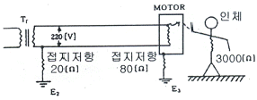
- 30mA, 0.1초
- 60mA, 0.1초
- 90mA, 0.1초
- 120mA, 0.1초
(정답률: 68%)
64. 고압 및 특고압의 전로에 시설하는 피뢰기의 접지저항은 몇 Ω 이하로 하여야 하는가?(관련 규정 개정전 문제로 여기서는 기존 정답인 1번을 누르면 정답 처리됩니다. 자세한 내용은 해설을 참고하세요.)
- 10Ω 이하
- 100Ω 이하
- 106Ω 이하
- 1kΩ 이하
(정답률: 78%)
65. 절연전선의 과전류에 의한 연소단계 중 착화단계의 전선전류밀도(A/mm2)로 알맞은 것은?
- 40 A/mm2
- 50 A/mm2
- 65 A/mm2
- 120 A/mm2
(정답률: 45%)
66. 변압기의 중성점을 제2종 접지한 수전전압 22.9kV, 사용전압 220V인 공장에서 외함을 제3종 접지공사를 한 전동기가 운전 중에 누전되었을 경우에 작업자가 접촉될 수 있는 최소전압은 약 몇 V 인가? (단, 1선 지락전류 10A, 제 3종 접지저항 30Ω, 인체저항 : 10000Ω 이다.)(관련 규정 개정전 문제로 여기서는 기존 정답인 3번을 누르면 정답 처리됩니다. 자세한 내용은 해설을 참고하세요.)
- 116.7 V
- 127.5 V
- 146.7 V
- 165.6 V
(정답률: 61%)
67. 전압은 저압, 고압 및 특별고압으로 구분되고 있다. 다음 중 저압에 대한 설명으로 가장 알맞은 것은?(관련 규정 개정전 문제로 여기서는 기존 정답인 3번을 누르면 정답 처리됩니다. 자세한 내용은 해설을 참고하세요.)
- 직류 750V 미만, 교류 650V 미만
- 직류 750V 이하, 교류 650V 이하
- 직류 750V 이하, 교류 600V 이하
- 직류 750V 미만, 교류 600V 미만
(정답률: 77%)
68. 대전의 완화를 나타내는데 중요한 인자인 시정수(time constant)는 최초의 전하가 약 몇 %까지 완화되는 시간을 말하는가?
- 20 %
- 37 %
- 45 %
- 50 %
(정답률: 57%)
69. 금속성의 전기기계장치나 구조물에 인체의 일부가 상시 접촉되어 있는 상태의 허용접촉 전압으로 옳은 것은?
- 2.5V 이하
- 25V 이하
- 50V 이하
- 제한없음
(정답률: 56%)
70. 정전기 대전현상의 설명으로 틀린 것은?
- 충돌대전 : 분체류와 같은 입자 상호간이나 입자와 고체와의 충돌에 의해 빠른 접촉 또는 분리가 행하여짐으로써 정전기가 발생되는 현상
- 유동대전 : 액체류가 파이프 등 내부에서 유동할 때 액체와 관 벽 사이에서 정전기가 발생되는 현상
- 박리대전 : 고체나 분체류와 같은 물체가 파괴되었을 때 전하분리에 의해 정전기가 발생되는 현상
- 분출대전 : 분체류, 액체류, 기체류가 단면적이 작은 분출구를 통해 공기 중으로 분출될 때 분출하는 물질과 분출구의 마찰로 인해 정전기가 발생되는 현상
(정답률: 70%)
71. 상용주파수 60Hz 교류에서 성인 남자의 경우 고통한계 전류로 가장 알맞은 것은?
- 15 ~ 20 mA
- 10 ~ 15 mA
- 7 ~ 8 mA
- 1mA
(정답률: 53%)
72. 정상작동 상태에서 폭발 가능성이 없으나 이상상태에서 짧은 시간동안 폭발성 가스 또는 증기가 존재하는 지역에 사용 가능한 방폭용기를 나타내는 기호는?
- ib
- p
- e
- n
(정답률: 42%)
73. 정전기 발생에 영향을 주는 요인에 대한 설명으로 틀린 것은?
- 물체의 분리속도가 빠를수록 발생량은 적어진다.
- 접촉면적이 크고 접촉압력이 높을수록 발생량이 많아진다.
- 물체 표면이 수분이나 기름으로 오염되면 산화 및 부식에 의해 발생량이 많아진다.
- 정전기의 발생은 처음 접촉, 분리할 대가 최대로 되고 접촉, 분리가 반복됨에 따라 발생량은 감소한다.
(정답률: 68%)
74. 분진방폭 배선시설에 분진침투 방지재료로 가장 적합한 것은?
- 분진침투 케이블
- 컴파운드(compound)
- 자기융착성 테이프
- 씰링피팅(sealing fitting)
(정답률: 49%)
75. 인체의 저항을 1000Ω으로 볼 때 심실세동을 일으키는 전류에서의 전기에너지는 약 몇 J 인가? (단, 심실세동전류는
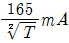
이며, 통전시간 T는 1초, 전원은 정현파 교류이다.)- 13.6 J
- 27.2 J
- 136.6 J
- 272.2 J
(정답률: 64%)
76. 정전작업 시 조치사항으로 부적합한 것은?
- 작업 전 전기설비의 잔류 전하를 확실히 방전한다.
- 개로된 전로의 충전여부를 검전기구에 의하여 확인한다.
- 개폐기에 시건장치를 하고 통전금지에 관한 표지판은 제거한다.
- 예비 동력원의 역송전에 의한 감전의 위험을 방지하기 위해 단락접지 기구를 사용하여 단락 접지를 한다.
(정답률: 80%)
77. 300A의 전류가 흐르는 저압 가공전선로의 1(한)선에서 허용 가능한 누설전류는 몇 mA인가?
- 600 mA
- 450 mA
- 300 mA
- 150 mA
(정답률: 68%)
78. 방폭 전기기기의 성능을 나타내는 기호표시로 EX P Ⅱ A T5를 나타내었을 때 관계가 없는 표시 내용은?
- 온도등급
- 폭발성능
- 방폭구조
- 폭발등급
(정답률: 71%)
79. 다음 중 1종 위험장소로 분류되지 않는 것은?
- Floating roof tank 상의 shell 내의 부분
- 인화성 액체의 용기 내부의 액면 상부의 공간부
- 점검수리 작업에서 가연성 가스 또는 증기를 방출하는 경우의 밸부 부근
- 탱크폴리, 드럼관 등이 인화성 액체를 충전하고 있는 경우의 개구부 부근
(정답률: 55%)
80. 저압 전기기기의 누전으로 인한 감전재해의 방지대책이 아닌 것은?
- 보호접지
- 안전전압의 사용
- 비접지식 전로의 채용
- 배선용차단기(MCCB)의 사용
(정답률: 44%)
5과목: 화학설비위험방지기술
81. 다음 중 화학공장에서 주로 사용되는 불활성 가스는?
- 수소
- 수증기
- 질소
- 일산화탄소
(정답률: 68%)
82. 위험물안전관리법령에서 정한 위험물의 유형 구분이 나머지 셋과 다른 하나는?
- 질산
- 질산칼륨
- 과염소산
- 과산화수소
(정답률: 50%)
83. 다음 중 압축기 운전시 토출압력이 갑자기 증가하는 이유로 가장 적절한 것은?
- 윤활유의 과다
- 피스톤 링의 가스 누설
- 토출관 내에 저항 발생
- 저장조 내 가스압의 감소
(정답률: 74%)
84. 프로판(C3H8) 가스가 공기 중 연소할 때의 화학양론농도는 약 얼마인가? (단, 공기 중의 산소농도는 21vol% 이다.)
- 2.5vol%
- 4.0vol%
- 5.6vol%
- 9.5vol%
(정답률: 45%)
85. 다음 중 CO2 소화약제의 장점으로 볼 수 없는 것은?
- 기체 팽창률 및 기화 잠열이 작다.
- 액화하여 용기에 보관할 수 있다.
- 전기에 대해 부도체이다.
- 자체 증기압이 높기 때문에 자체 압력으로 방사가 가능하다.
(정답률: 55%)
86. 아세톤에 대한 설명으로 틀린 것은?
- 증기는 유독하므로 흡입하지 않도록 주의해야 한다.
- 무색이고 휘발성이 강한 액체이다.
- 비중이 0.79 이므로 물보다 가볍다.
- 인화점이 20°C 이므로 여름철에 더 인화 위험이 높다.
(정답률: 75%)
87. 다음 중 인화점이 가장 낮은 것은?
- 벤젠
- 메탄올
- 이황화탄소
- 경유
(정답률: 70%)
88. 다음 중 왕복펌프에 속하지 않는 것은?
- 피스톤 펌프
- 플런저 펌프
- 기어 펌프
- 격막 펌프
(정답률: 69%)
89. 다음 중 아세틸렌을 용해가스로 만들 때 사용되는 용제로 가장 적합한 것은?
- 아세톤
- 메탄
- 부탄
- 프로판
(정답률: 81%)
90. 다음 중 금속 산(acid)과 접촉하여 수소를 가장 잘 방출시키는 원소는?
- 칼륨
- 구리
- 수은
- 백금
(정답률: 64%)
91. 비점이 낮은 액체 저장탱크 주위에 화재가 발생했을 때 저장탱크 내부의 비등 현상으로인한 압력 상승으로 탱크가 파열되어 그 내용물이 증발, 팽창하면서 발생되는 폭발현상은?
- Back Draft
- BLEVE
- Flash Over
- UVCE
(정답률: 80%)
92. 가연성가스의 폭발범위에 관한 설명으로 틀린 것은?
- 압력 증가에 따라 폭발 상한계와 하한계가 모두 현저히 증가한다.
- 불활성가스를 주입하면 폭발범위는 좁아진다.
- 온도의 상승과 함께 폭발범위는 넓어진다.
- 산소 중에서의 폭발범위는 공기 중에서 보다 넓어진다.
(정답률: 75%)
93. 고체 가연물의 일반적인 4가지 연소방식에 해당하지 않는 것은?
- 분해연소
- 표면연소
- 확산연소
- 증발연소
(정답률: 63%)
94. 산업안전보건법령에 따라 정변위 압축기 등에 대해서 과압에 따른 폭발을 방지하기 위하여 설치하여야 하는 것은?
- 역화방지기
- 안전밸브
- 감지기
- 체크밸브
(정답률: 67%)
95. 다음 중 응상폭발이 아닌 것은?
- 분해폭발
- 수증기폭발
- 전선폭발
- 고상간의 전이에 의한 폭발
(정답률: 50%)
96. 5% NaOH 수용액과 10% NaOH 수용액을 반응기에 혼합하여 6% 100kg의 NaOH 수용액을 만들려면 각각 몇 kg의 NaOH 수용액이 필요한가?
- 5% NaOH 수용액 : 33.3, 10% NaOH 수용액 : 66.7
- 5% NaOH 수용액 : 50, 10% NaOH 수용액 : 50
- 5% NaOH 수용액 : 66.7, 10% NaOH 수용액 : 33.3
- 5% NaOH 수용액 : 80, 10% NaOH 수용액 : 20
(정답률: 56%)
97. 다음 설명이 의미하는 것은? “온도, 압력 등 제어상태가 규정의 조건을 벗어나는 것에 의해 반응속도가 지수함수적으로 증대되고, 반응용기 내의 온도, 압력이 급격히 이상 상승되어 규정 조건을 벗어나고, 반응이 과격화되는 현상”
- 비등
- 과열·과압
- 폭발
- 반응폭주
(정답률: 72%)
98. 분진폭발의 발생 순서로 옳은 것은?
- 비산→분산→퇴적분진→발화원→2차폭발→전면폭발
- 비산→퇴적분진→분산→발화원→2차폭발→전면폭발
- 퇴적분진→발화원→분산→비산→전면폭발→2차폭발
- 퇴적분진→비산→분산→발화원→전면폭발→2차폭발
(정답률: 75%)
99. 건축물 공사에 사용되고 있으나, 불에 타는 성질이 있어서 화재 시 유독한 시안화수소 가스가 발생되는 물질은?
- 염화비닐
- 염화에틸렌
- 메타크릴산메틸
- 우레탄
(정답률: 66%)
100. 다음 중 밀폐 공간내 작업시의 조치사항으로 가장 거리가 먼 것은?
- 산소결핍이 우려되거나 유해가스 등의 농도가 높아서 폭발할 우려가 있는 경우는 진행 중인 작업에 방해되지 않도록 주의하면서 환기를 강화하여야 한다.
- 해당 작업장을 적정한 공기상태로 유지되도록 환기하여야 한다.
- 해당 장소에 근로자를 입장시킬 때와 퇴장시킬 때에 각각 인원을 점검하여야 한다.
- 해당 작업장과 외부의 감시인 사이에 상시연락을 취할 수 있는 설비를 설치하여야 한다.
(정답률: 80%)
6과목: 건설안전기술
101. 공정율이 65%인 건설현장의 경우 공사 진척에 따른 산업안전보건관리비의 최소 사용기준으로 옳은 것은?
- 40% 이상
- 50% 이상
- 60% 이상
- 70% 이상
(정답률: 66%)
102. 화물취급작업과 관련한 위험방지를 위해 조치하여야 할 사항으로 옳지 않은 것은?
- 작업장 및 통로의 위험한 부분에는 안전하게 작업할 수 있는 조명을 유지할 것
- 차량 등에서 화물을 내리는 작업을 하는 경우에 해당 작업에 종사하는 근로자에게 쌓여 있는 화물 중간에서 화물을 빼내도록 하지 말 것
- 육상에서의 통로 및 작업장소로서 다리 또는 선거 갑문을 넘는 보도 등의 위험한 부분에는 안전난간 또는 울타리 등을 설치할 것
- 부두 또는 안벽의 선을 따라 통로를 설치하는 경우에는 폭을 50cm 이상으로 할 것
(정답률: 79%)
103. 타워크레인을 자립고(自立高) 이상의 높이로 설치할 때 지지벽체가 없어 와이어로프로 지지하는 경우의 준수사항으로 옳지 않은 것은?
- 와이어로프를 고정하기 위한 전용지지프레임을 사용할 것
- 와이어로프 설치각도는 수평면에서 60° 이내로 하되, 지지점은 4개소 이상으로 하고, 같은 각도로 설치할 것
- 와이어로프와 그 고정부위는 충분한 강도와 장력을 갖도록 설치하되, 와이어로프를 클립·샤클(shackle) 등의 기구를 사용하여 고정하지 않도록 유의할 것
- 와이어로프가 가공전선(架空電線)에 근접하지 않도록 할 것
(정답률: 73%)
104. 말비계를 조립하여 사용할 때의 준수사항으로 옳지 않은 것은?
- 지주부재의 하단에는 미끄럼 방지장치를 한다.
- 지주부재와 수평면과의 기울기는 75° 이하로 한다.
- 말비계의 높이가 2m를 초과할 경우에는 작업발판의 폭을 30cm 이상으로 한다.
- 지주부재와 지주부재 사이를 고정시키는 보조부재를 설치한다.
(정답률: 71%)
1⑤. 흙막이 지보공의 안전조치로 옳지 않은 것은?
- 굴착배면에 배수로 미설치
- 지하매설물에 대한 조사 실시
- 조립도의 작성 및 작업순서 준수
- 흙막이 지보공에 대한 조사 및 점검 철저
(정답률: 77%)
106. 거푸집동바리등을 조립 또는 해체하는 작업을 하는 경우 준수사항으로 옳지 않은 것은?
- 재료, 기구 또는 공구 등을 올리거나 내리는 경우에는 근로자로 하여금 달줄·달포대 등의 사용을 금하도록 할 것
- 낙하·충격에 의한 돌발적 재해를 방지하기 위하여 버팀목을 설치하고 거푸집동바리등을 인양장비에 매단 후에 작업을 하도록 하는 등 필요한 조치를 할 것
- 비, 눈, 그 밖의 기상상태의 불안정으로 날씨가 몹시 나쁜 경우에는 그 작업을 중지할 것
- 해당 작업을 하는 구역에는 관계 근로자가 아닌 사람의 출입을 금지할 것
(정답률: 78%)
107. 로드(rod)·유압잭(jack) 등을 이용하여 거푸집을 연속적으로 이동시키면서 콘크리트를 타설할 때 사용되는 것으로 silo 공사 등에 적합한 거푸집은?
- 메탈폼
- 슬라이딩폼
- 워플폼
- 페코빔
(정답률: 76%)
108. 양중기에 사용하는 와이어로프에서 화물의 하중을 직접 지지하는 달기와이어로프 또는 달기체인의 안전계수 기준은?
- 3이상
- 4이상
- 5이상
- 10이상
(정답률: 66%)
109. 건설업의 산업안전보건관리비 사용항목에 해당되지 않는 것은?
- 안전시설비
- 근로자 건강관리비
- 운반기계 수리비
- 안전진단비
(정답률: 73%)
110. 설치·이전하는 경우 안전인증을 받아야 하는 기계·기구에 해당되지 않는 것은?
- 크레인
- 리프트
- 곤돌라
- 고소작업대
(정답률: 64%)
111. 유해·위험방지계획서 첨부서류에 해당되지 않는 것은?
- 안전관리를 위한 교육자료
- 안전관리 조직표
- 건설물, 사용 기계설비 등의 배치를 나타내는 도면
- 재해 발생 위험 시 연락 및 대피방법
(정답률: 58%)
112. 항타기 또는 항발기의 권상용 와이어로프의 사용금지기준에 해당하지 않는 것은?
- 이음매가 없는 것
- 지름의 감소가 공칭지름의 7%를 초과하는 것
- 꼬인 것
- 열과 전기충격에 의해 손상된 것
(정답률: 63%)
113. 철골 작업 시 기상조건에 따라 안전상 작업을 중지하여야 하는 경우에 해당되는 기준으로 옳은 것은?
- 강우량이 시간당 5mm 이상인 경우
- 강우량이 시간당 10mm 이상인 경우
- 풍속이 초당 10m 이상인 경우
- 강설량이 시간당 20mm 이상인 경우
(정답률: 65%)
114. 가설통로의 구조에 관한 기준으로 옳지 않은 것은?
- 경사가 15°를 초과하는 경우에는 미끄러지지 아니하는 구조로 할 것
- 경사는 20° 이하로 할 것
- 추락의 위험이 있는 장소에는 안전난간을 설치할 것
- 수직갱에 가설된 통로의 길이가 15m 이상인 경우에는 10m 이내마다 계단참을 설치할 것
(정답률: 73%)
115. 동바리로 사용하는 파이프 서포트는 최대 몇 개 이상 이어서 사용하지 않아야 하는가?
- 2개
- 3개
- 4개
- 5개
(정답률: 74%)
116. 건설현장에 설치하는 사다리식 통로의 설치기준으로 옳지 않은 것은?
- 발판과 벽과의 사이는 15cm 이상의 간격을 유지할 것
- 발판의 간격은 일정하게 할 것
- 사다리의 상단은 걸쳐놓은 지점으로부터 60cm 이상 올라가도록 할 것
- 사다리식 통로의 길이가 10m 이상인 경우에는 3m 이내마다 계단참을 설치할 것
(정답률: 75%)
117. 흙막이 계측기의 종류 중 주변 지반의 변형을 측정하는 기계는?
- Tilt meter
- Inclino meter
- Strain gauge
- Load cell
(정답률: 43%)
118. 차량계 하역운반기계등에 화물을 적재하는 경우에 준수해야 할 사항으로 옳지 않은 것은?
- 하중이 한쪽으로 치우치도록 하여 공간상 효율적으로 적재할 것
- 구내운반차 또는 화물자동차의 경우 화물의 붕괴 또는 낙하에 의한 위험을 방지하기 위하여 화물에 로프를 거는 등 필요한 조치를 할 것
- 운전자의 시야를 가리지 않도록 화물을 적재할 것
- 화물을 적재하는 경우 최대적재량을 초과하지 않을 것
(정답률: 81%)
119. 다음 설명에 해당하는 안전대와 관련된 용어로 옳은 것은? (단, 보호구 안전인증 고시 기준)
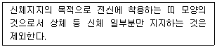
- 안전그네
- 벨트
- 죔줄
- 버클
(정답률: 67%)
120. 터널공사의 전기발파작업에 관한 설명으로 옳지 않은 것은?
- 전선은 점화하기 전에 화약류를 충진한 장소로부터 30m 이상 떨어진 안전한 장소에서 도통시험 및 저항시험을 하여야 한다.
- 점화는 충분한 허용량을 갖는 발파기를 사용하고 규정된 스위치를 반드시 사용하여야 한다.
- 발파 후 발파기와 발파모선의 연결을 유지한 채 그 단부를 절연시킨다.
- 점화는 선임된 발파책임자가 행하고 발파기의 핸들을 점화할 때 이외는 시건장치를 하거나 모선을 분리하여야 하며 발파책임자의 엄중한 관리하에 두어야 한다.
(정답률: 80%)